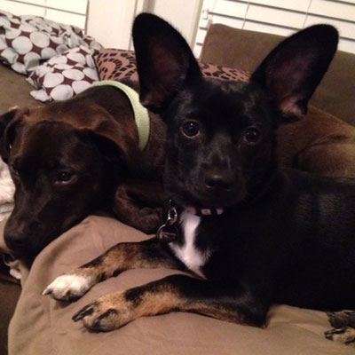

About Me
I grew up on the property of a historical amusement park in the suburbs outside of New York City. After attending college in Upstate New York, I moved to Arizona, back to New York, and finally landed in Austin in 2010.
In 2014, I completed my Master of Fine Arts in Communication Design at Texas State. My thesis research focused on using interactive design to teach digital native undergraduate students typography. I love being an educator as much as I love learning. As a design thinker, I enjoy working through the conceptual, creative, and technical steps of each project. Currently, I am designer for a NYC based startup, focusing mostly on UX/UI and front-end web development.
My husband and I live in South Austin with our two dogs, Brooklyn and Luna, and we are expecting our first Little Beane in February.